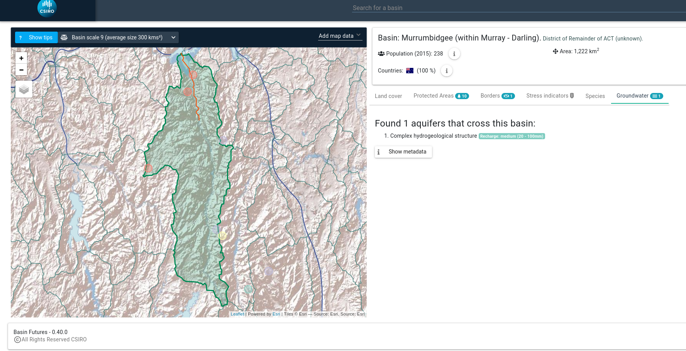
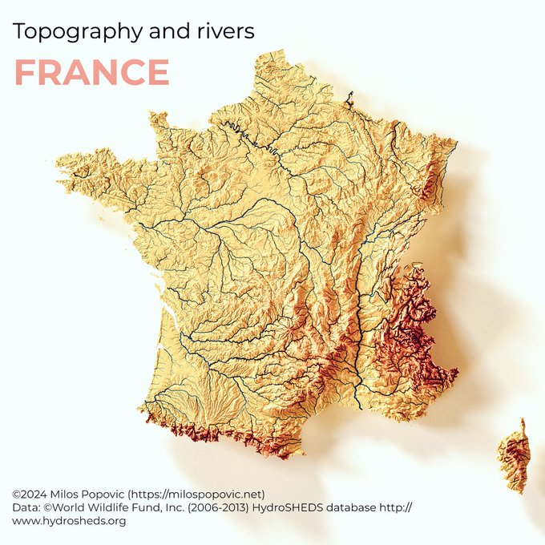
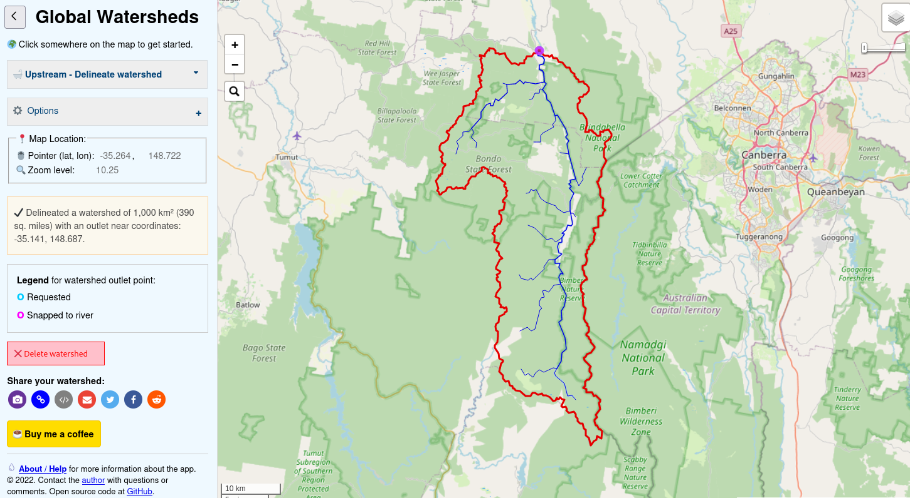
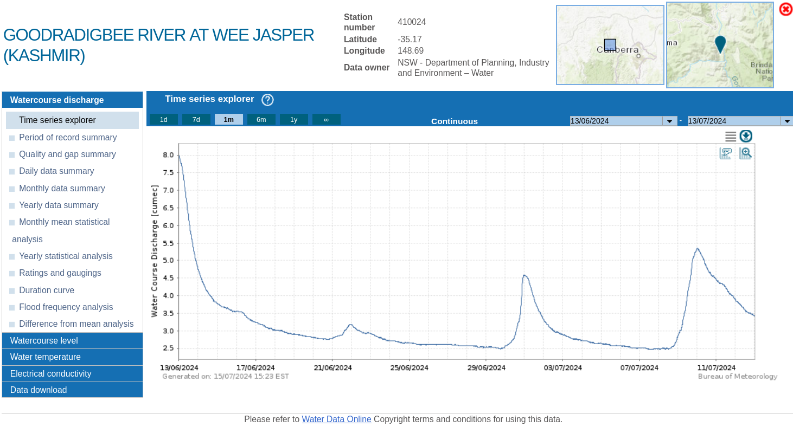
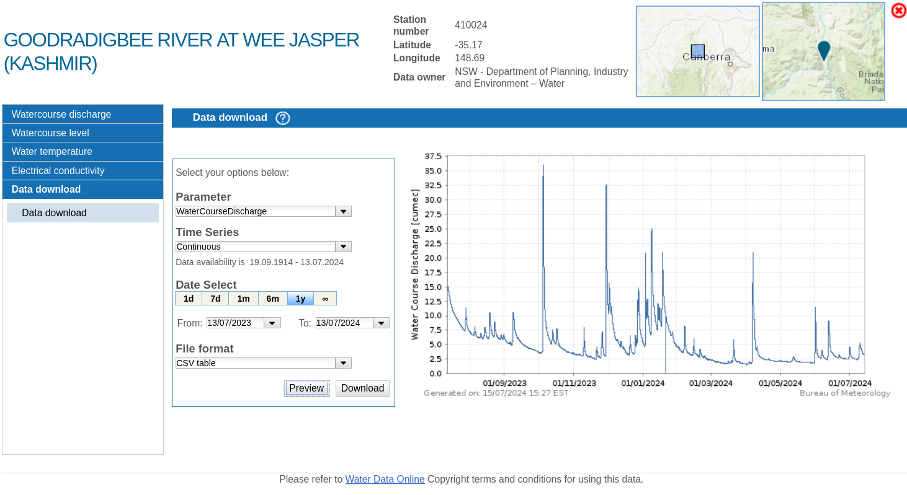

Background
I (we) will probably be working on a new streamflow forcasting system in Australia. In a conversation the project leader mentioned the upcoming song and dance to define a set of semi-distributed model structures (subareas, nodes, links) for several catchments.
Aside from the perhaps unavoidable arguments about which DEM and river network to use, it was noted that there was no known readily available service within our organisation to quickly produce such catchment definitions, even if only for perliminary work. It sure is a feasible feature, and has been done many times in relative isolation by teams or individuals in more or less idiosyncratic manners. But so far as we know adapting these for our need would require, at best, a fair bit of adaptation.
Rather than yet implementing something within, and solely for, the project, can we implement something aiming to be more versatile, within and beyond the upcoming project?
Use cases
- Set up a sensible daily semi-distributed streamflow model for the Goodradigbee river (NSW) upstream of Burrinjuck Dam, in ten minutes flat and from scratch
- Batch delineatin for at least 222 unregulated catchments of interest over Australia
- Delineate one catchment, and create a concrete model definition (SWIFT) that is ready to run populated with e.g. some SILO derived climate input data.
Anticipated tools
Without unduly assuming solution implementation details, it is fair to expect:
- A web dashboard to visually define a catchment of interest.
- load and/or click to define outlets and points of particular interest to split subcatchments.
- Probably hosted at shiny.csiro.au or its intranet twin.
- A python (a priori) package for programmatic access to features.
Related work
Scouting for known or found work that may relate to the use cases. This is not exhaustive.
eWater Source
This product, functionally, may be the best suited to the needs elicited above, functionally: DEM derived river network, additional points to snap to the river for subcatchment definition, etc. It is implemented in .NET. This is not open source though. Although not a disqualifying aspect, it is not conducive to reusing with assurance our freedom to operate.

Basin futures
Basin Futures includes a facility to define semi-distributed rainfall runoff models using HydroSHEDS data.
The catchment delineation is done under the hood using TauDEM, which has python bindings but may require handling some temporary files (command line, C++ engine).

Aside from the immediate “subcatchment delineation” interest of ours, take the time to have a look at “Basinpedia” which is a great example using publicly availalable global data sets.
AWRA Community Modelling System
I understand, second hand, that the Australian Water Resources Assessment (AWRA) Community Modelling System includes facilities to define catchments, or to perform weighted input time series averaging. I’ve previously tried to explore, but could not recreate the conda environment.
Milos Makes Maps
Milos Popovic makes and shares gorgeous maps, using R. While I am not yet aware of sub-catchment delineation facilities off the shelf, check out the didactic youtube video Visualize Like a Pro: 3D Elevation and River Maps Made Simple.

Global Watersheds
Global watersheds, Cool online tool, but does catchments not subcatchments. Powered by a python codebase delineator

pysheds
pysheds python package. It is unclear whether it can do subcatchments.
PCRaster
Automatic delineation of subcatchments from a DEM using PCRaster Python and Derive all subcatchments from a DEM using PCRaster in QGIS
wflow
wflow, which is now deprecated and now ported to Julia.
hatariUti
Out of interest, a tool where you have to bring your own data. Demo mode available, but subscription to scale up.
Time series observations
The catchment/subcatchment delineation is purely a spatial exercise. It has some outputs that should stand on their own (vector and raster data).
A complementary service is to derive from these spatial data a model structure (e.g. rainfall-runoff models, and river reaches with streamflow routing), and the final step is to attribute input time series to these runoff/streamflow models. Some of the third party work listed above (Basin Futures and eWater Source) have this capability.
It is a pet peeve of mine (and colleagues) that foundational time series data in hydrology remains deceptively difficult to ingest and exploit (in Australia at least). There is a lot of residual impedance (technological and organisational) between point of truth data and a hydrologist’s notebook. I am sure I have gaps of know how, part of the problem, but FWIW I am not the only one feeling this way.
Below is a short list of observations/input data resources that may be relevant to our catchment model builder services.
CSIRO may have some internal time series data resources under licences; I will not mention nor list these in this post.
Climate inputs
Notwithstanding the additional resources “we” may have access to under license, the following resources (prob. not exhaustive) are publicly available.
- SILO, gridded product or points stations.
- AGDC
- Note the disappointing “DownloadableData : Openly accessible thredds INDEX webpage for data (opendap, etc) (not yet available)”
- the Bureau of Meteorology Climate Data Online. Note that behind the scene there may be a temporal resolution down to 30 or even 10 minutes observations (rain gauges), but these are not readily available publicly.
Instream observations
While not a typical time series input to many models, they are key to being able to calibrate models.
- Streamflow observations
- daily
- Water Data Online. A python package pybomwater is designed for programmatic access. Note that the Bureau service it taps into is throttled, as I write, so beware not to fetch large quantities of observation sites.
- global datasets
- GRDC.
- CAMELS-x datasets. Also include preorocessed climate time series usable as inputs.
- sub-daily
- Water Data Online also has down to 10 minutes observations, at least for some gauges. See figures below.
- State agencies. For instance I previously made a post about the Victorian Water Measurement Information System. Water Data Online is in principle supposed to be a superset, but some data points may not be ingested.
- daily
Water Data Online
Besides the python package pybomwater, the manual visualisation/download facilities of Water Data Online:

